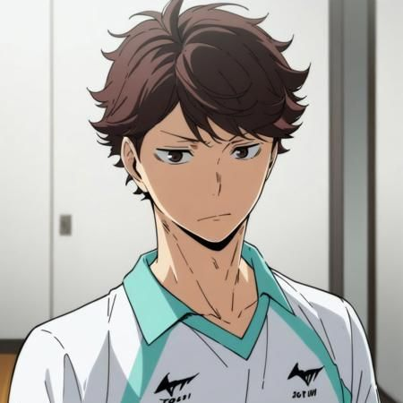
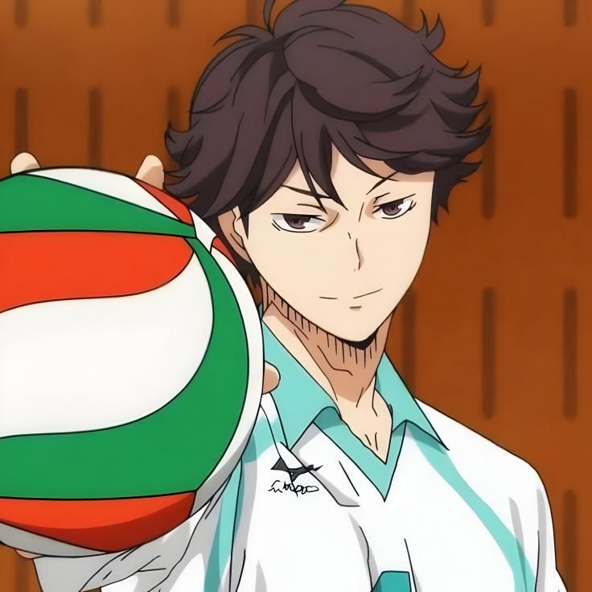
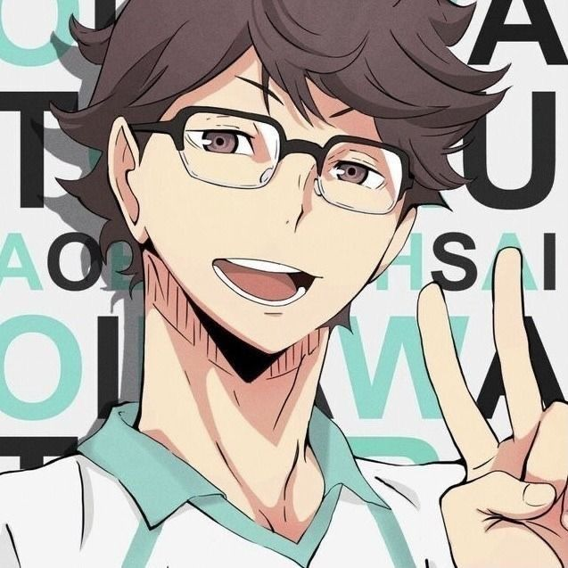
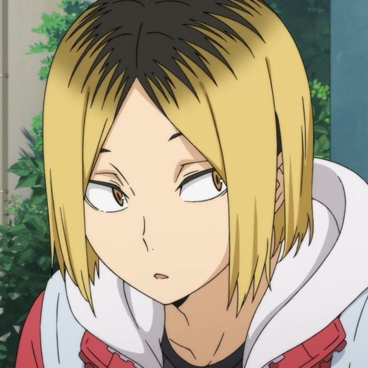
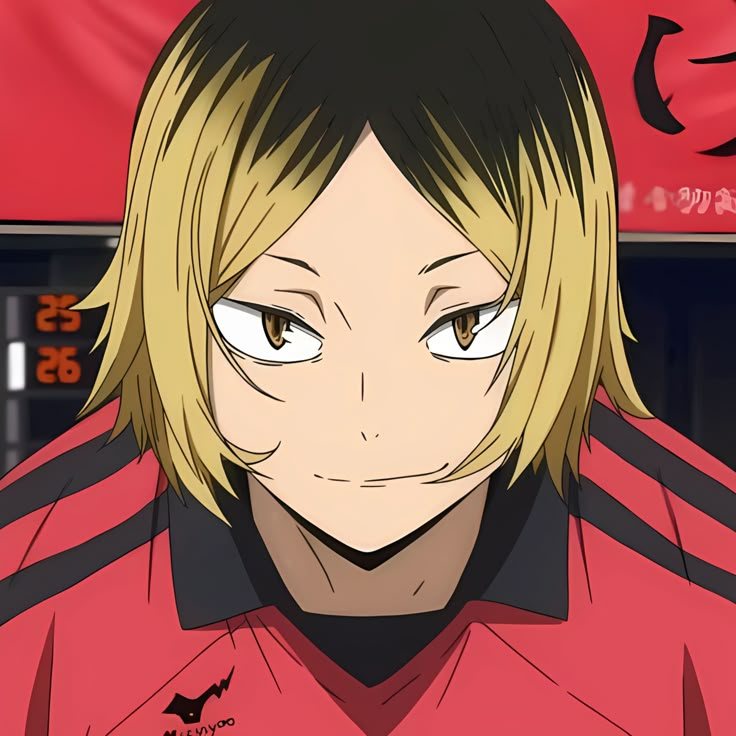
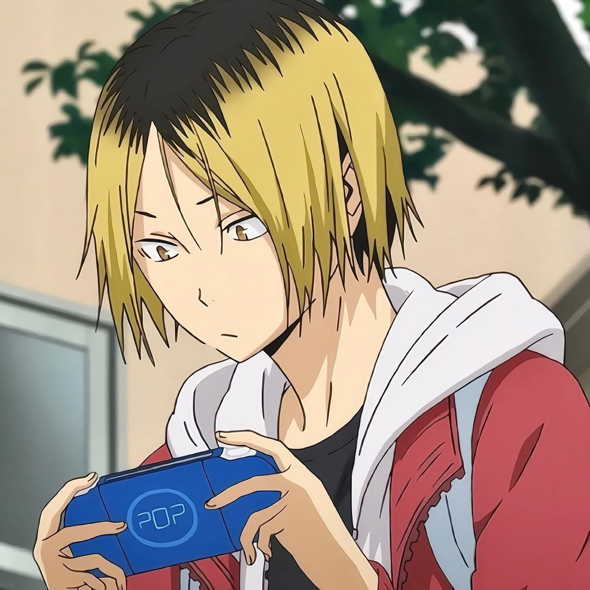
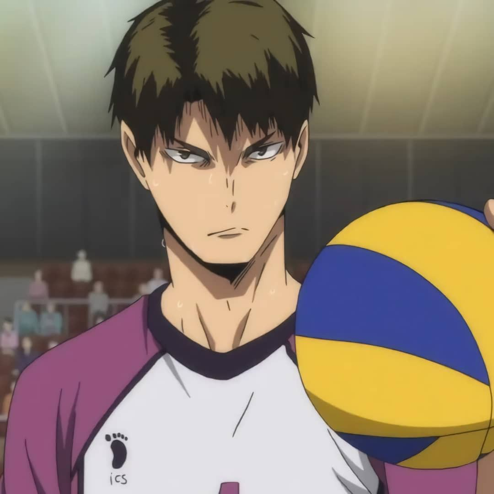
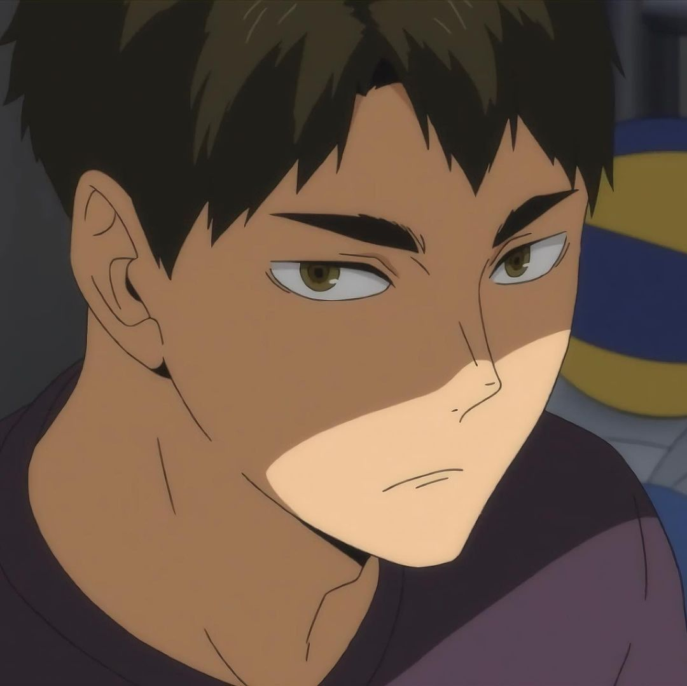
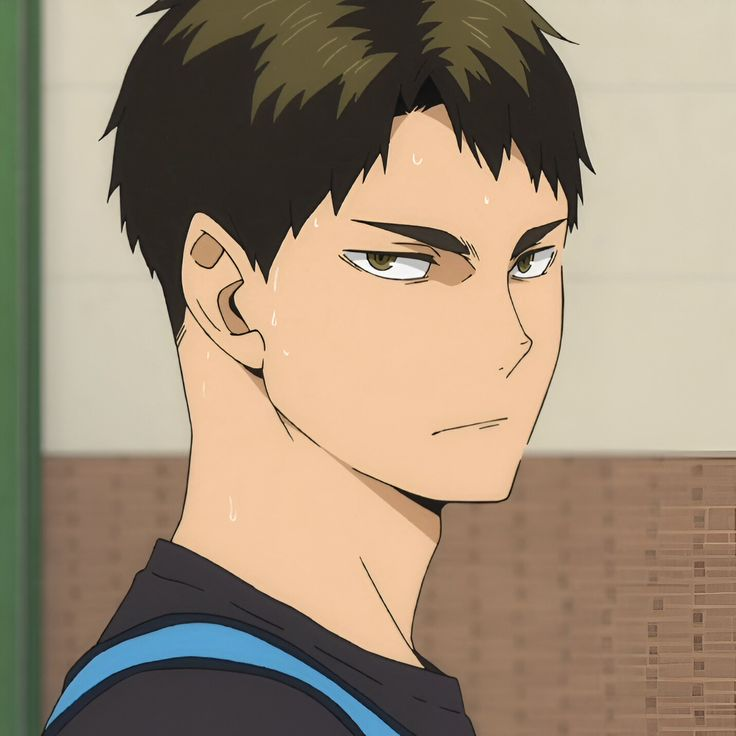

Para que los protagonistas de Karasuno puedan llegar a las nacionales, tienen que enfrentarse al "bando" de las grandes academias de la región. Cada una de estas escuelas representa una filosofía de juego totalmente distinta (fuerza bruta, defensa perfecta o liderazgo) y funcionan como los grandes oponentes a vencer a lo largo del torneo.



El rival jurado de Kageyama. No nació siendo un genio, pero su disciplina lo convirtió en uno de los mejores colocadores de la prefectura. Destaca por sus saques con una potencia destructiva y por saber cómo sacar el 100% del talento de cada uno de sus compañeros.



Nekoma es el equipo rival histórico de Karasuno (su partido es conocido como la "Batalla en el Basurero"). Kenma no tiene fuerza física ni le gusta esforzarse, pero tiene una mente brillante para los videojuegos y la estrategia. Él analiza los movimientos de Karasuno y diseña trampas para frenar sus ataques.



Representa la fuerza bruta absoluta del bando rival. Es uno de los tres mejores jugadores de todo Japón. Al ser zurdo, sus remates llevan un giro incómodo que destruye las defensas enemigas. Su filosofía es simple: si el pase es alto, él aplastará el balón contra el suelo sin importar el bloqueo.